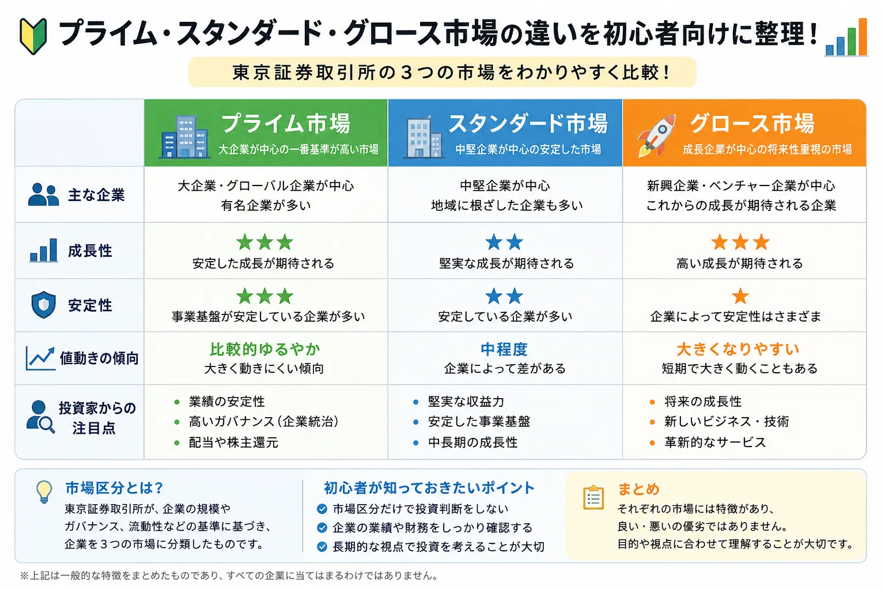

投資の基礎知識
プライム・スタンダード・グロース市場とは？違いを初心者向けに解説
日本株のニュースでは「東証プライム」「東証スタンダード」「東証グロース」という言葉がよく登場します。これらは東京証券取引所が設けている市場区分で、企業に求められる流動性、ガバナンス、成長段階などの考え方が異なります。ただし、所属市場だけで企業の安全性や将来性が決まるわけではありません。
Overview
東証の3市場を最初に整理

- プライム市場：高い流動性とガバナンスが求められ、国内外の機関投資家から注目されやすい市場です。
- スタンダード市場：公開市場の投資対象として一定の流動性と基本的なガバナンス水準を備えた企業向けです。
- グロース市場：高い成長可能性を持つ一方、事業実績や業績が発展途上の企業も含まれる市場です。
- 市場区分は「上・中・下」の順位ではなく、それぞれ異なるコンセプトに基づいて設計されています。
Market Segments
東証の市場区分とは？
市場区分とは、上場企業を一定の考え方や基準に沿って分けたものです。東京証券取引所では、企業の流動性、ガバナンス、成長段階、投資家層などを踏まえ、プライム市場・スタンダード市場・グロース市場の3区分を設けています。
市場区分がある理由
企業と投資家の双方が特徴を把握しやすくする
上場企業には、世界規模で事業を展開する大企業、安定した基盤を持つ中堅企業、将来の成長を目指す新興企業など、さまざまな段階があります。市場区分を分けることで、企業に求める基準や市場の役割を明確にし、投資家が企業の立ち位置を理解しやすくしています。
2022年の市場再編
旧4市場から現在の3市場へ
東京証券取引所は2022年4月4日、旧市場第一部・市場第二部・マザーズ・JASDAQを、プライム市場・スタンダード市場・グロース市場へ再編しました。市場のコンセプトを分かりやすくし、上場後も継続的に基準を満たすことを重視する仕組みに改められています。
市場区分は企業の特徴を理解する手掛かりですが、同じ市場に上場していても、業種、企業規模、収益性、財務状況、成長率、株価の動きは大きく異なります。
Prime Market
プライム市場とは？
プライム市場は、多くの機関投資家の投資対象になり得る規模の時価総額や流動性を持ち、より高い水準のガバナンスを備え、持続的な成長と中長期的な企業価値向上を目指す企業向けの市場です。
大企業が多い
日本を代表する企業や海外で事業を展開する企業が多く見られます。ただし、企業規模だけで所属市場が決まるわけではありません。
流動性が重視される
多くの投資家が売買しやすい状態を保つため、流通株式数や流通株式時価総額、売買代金などに関する基準が設けられています。
ガバナンスが重視される
株主との建設的な対話、情報開示、独立社外取締役など、企業統治に関してより高い水準が求められます。
国内外から注目されやすい
海外投資家や年金・投資信託などの機関投資家が投資対象として確認する企業も多く、決算や経営方針が広く注目されます。
安定を保証する市場ではない
プライム市場の企業でも業績悪化や不祥事、景気変動などにより株価が大きく下落することがあります。
継続的な企業価値向上
上場時だけでなく、上場後も市場からの期待に応え、中長期的な企業価値向上へ取り組むことが求められます。
Standard Market
スタンダード市場とは？
スタンダード市場は、公開市場における投資対象として一定の流動性と基本的なガバナンス水準を備え、持続的な成長と中長期的な企業価値向上を目指す企業向けの市場です。
安定した事業基盤を持つ企業が多い
長く事業を続けている企業や、特定分野で強みを持つ企業など、一定の事業実績を持つ企業が多く見られます。
中堅企業が中心
プライム市場と比べると時価総額や売買規模が小さい企業も多い一方、独自技術や地域基盤を持つ企業もあります。
幅広い業種が上場
製造業、小売業、サービス業、不動産、情報通信など、さまざまな業種の企業が上場しています。
流動性には差がある
売買が活発な銘柄もあれば、取引量が少ない銘柄もあります。売買高や出来高を個別に確認することが大切です。
成長企業も含まれる
スタンダード市場だから成長性が低いとは限りません。事業拡大や市場変更を目指す企業もあります。
企業ごとの差が大きい
安定性、収益性、財務、株主還元、成長性は企業によって異なるため、市場名だけで一括りにしないことが重要です。
Growth Market
グロース市場とは？
グロース市場は、高い成長可能性を実現するための事業計画と、その進捗を適切に開示できる企業向けの市場です。上場時点で事業実績が十分でない企業も含まれるため、成長への期待と同時に不確実性も大きくなりやすい特徴があります。
成長企業が中心
新しい技術やサービス、ビジネスモデルを持ち、将来の事業拡大を目指す企業が多く上場しています。
将来性が期待される
現在の利益だけでなく、市場の拡大余地、利用者数、売上成長率、技術力など将来の可能性が注目されます。
赤字企業も上場できる場合がある
利益実績だけでなく成長可能性を重視するため、先行投資によって赤字の企業が上場する場合もあります。
値動きが大きくなる場合がある
成長期待の変化、決算、資金調達、事業計画の進捗などにより、株価が短期間で大きく動くことがあります。
情報開示が重要
事業計画、成長戦略、リスク、資金使途などを確認し、計画と実績の差を継続的に見る必要があります。
成長を保証する市場ではない
高い成長可能性が期待されても、競争激化や需要変化により計画どおり成長できない場合があります。
「グロース市場＝危険」と決めつけるのも、「成長企業だから必ず上がる」と考えるのも適切ではありません。期待と不確実性の両方が大きくなりやすい市場として、企業ごとの事業内容や財務を確認することが大切です。
Comparison
プライム・スタンダード・グロース市場の違い
3市場の違いを初心者向けに整理すると、次のようになります。表は一般的な傾向であり、すべての上場企業にそのまま当てはまるわけではありません。
| 比較項目 | プライム市場 | スタンダード市場 | グロース市場 |
|---|---|---|---|
| 主な企業 | プライム 国内外で事業を展開する大企業や、機関投資家の投資対象になりやすい企業が多い |
スタンダード 一定の事業基盤を持つ中堅企業や、特定分野で強みを持つ企業が多い |
グロース 新しい事業や技術で高い成長を目指す新興企業が多い |
| 市場の考え方 | 高い流動性とガバナンスを備え、持続的な成長と企業価値向上を目指す | 一定の流動性と基本的なガバナンスを備え、持続的な成長を目指す | 高い成長可能性と事業計画を持ち、その進捗を適切に開示する |
| 成長性 | 成熟企業でも成長企業でもあり得る。海外展開や事業拡大が注目される | 安定成長から再成長まで企業ごとの差が大きい | 高い成長が期待される一方、計画の不確実性も大きい |
| 安定性 | 比較的規模の大きい企業が多いが、安全や株価安定を保証しない | 事業実績を持つ企業が多いが、財務や収益性は個別確認が必要 | 事業基盤が発展途上の企業も多く、業績変動が大きい場合がある |
| 流動性 | 高い水準が求められ、売買が活発な銘柄が比較的多い | 一定水準が求められるが、銘柄によって売買量に差がある | 銘柄によっては売買量が少なく、株価が動きやすい場合がある |
| 値動きの傾向 | 市場全体・景気・為替・海外投資家の動向などの影響を受けやすい | 業績、配当、個別材料など企業固有の要因が意識されやすい | 成長期待、決算、資金調達、事業進捗で大きく動く場合がある |
| 投資家の注目点 | 企業価値向上、ガバナンス、海外展開、資本効率、株主還元 | 安定収益、財務、独自性、配当、成長余地 | 売上成長率、市場規模、事業計画、資金繰り、黒字化の進捗 |
※ スマートフォンでは横にスクロールできます。
Listing Standards
上場基準の考え方
上場基準には、数値で確認する「形式要件」と、企業経営や情報開示の状態を確認する「実質審査」があります。また、上場後も市場ごとの上場維持基準を継続して満たす必要があります。
株主数・流通株式
投資家が売買できる株式が十分にあるか
特定の大株主だけが株式を保有していると、市場で売買できる株式が少なくなります。そのため、株主数、流通株式数、流通株式時価総額、流通株式比率などが確認されます。求められる水準は市場ごとに異なります。
時価総額・売買
市場で継続的に取引される規模があるか
プライム市場では特に、機関投資家が売買しやすい流動性が重視されます。スタンダード市場やグロース市場でも、それぞれの市場コンセプトに応じた規模や流動性の基準があります。
収益・財務・事業計画
市場ごとに重視する内容が異なる
プライム市場やスタンダード市場では収益基盤や財政状態などが確認されます。グロース市場では、現在の利益だけでなく、高い成長可能性を示す事業計画と、その進捗を継続して開示できる体制が重視されます。
ガバナンス・内部管理
公正な経営と適切な情報開示ができるか
経営の健全性、企業統治、内部管理体制、情報開示の適切性、少数株主保護などが審査されます。数値基準を満たせば自動的に上場できるわけではありません。
上場基準は「企業の品質を永久に保証する基準」ではありません。上場後に業績や財務が変化することもあるため、投資家は最新の決算や適時開示を確認する必要があります。
Beginner's Checklist
初心者が知っておきたいポイント
市場区分は便利な情報ですが、投資判断の答えではありません。次の順番で確認すると、企業を一面的に見にくくなります。
-
市場区分だけで投資判断しない
プライム市場だから安全、グロース市場だから危険とは限りません。市場区分は企業の立ち位置を知る入口として使います。
-
事業内容を確認する
何で売上や利益を得ているのか、顧客は誰か、景気や為替の影響を受けるのかを確認します。
-
業績と財務を確認する
売上高、営業利益、純利益、自己資本、借入金、営業キャッシュフローなどを見て、企業の実態を確認します。
-
成長性と株価水準を分けて考える
成長企業でも期待が株価に大きく織り込まれている場合があります。企業の成長と株価の割安・割高は別の問題です。
-
流動性を確認する
出来高が少ない銘柄は、希望する価格で売買しにくかったり、少ない注文で株価が大きく動いたりする場合があります。
-
長期的な視点で考える
市場変更や短期ニュースだけでなく、企業が数年後にどのような事業基盤を築けるかを考えることが大切です。
- プライム市場でも株価が大きく下がることはあります。
- スタンダード市場にも高収益・高成長の企業があります。
- グロース市場にも将来の大企業候補がある一方、計画未達のリスクがあります。
- 市場変更は注目材料になりますが、それだけで企業価値が変わるわけではありません。
Market Transfer
市場区分が変わることもある
上場企業は、別の市場区分への変更を申請し、審査基準を満たした場合に市場区分を変更できます。成長した企業が上位に見える市場へ移る場合だけでなく、自社の規模や株主構成、経営戦略に合った市場へ変更する場合もあります。
市場変更は自動ではない
企業が成長すれば自動的にプライム市場へ移るわけではありません。企業による申請と、東証による審査が必要です。
スタンダードへ変更する企業もある
プライム市場やグロース市場からスタンダード市場へ変更する企業もあります。市場変更を単純な昇格・降格だけで捉えないことが大切です。
上場維持基準も確認する
企業は上場後も、市場ごとの株主数、流通株式、時価総額、売買高などの基準を継続して満たす必要があります。
Related Articles
関連する投資の基礎知識
市場区分と合わせて、株式投資、株価指数、長期投資、新NISA、証券会社の基本を確認すると理解が深まります。
FAQ
プライム・スタンダード・グロース市場に関するFAQ
-
プライム市場とは何ですか？
プライム市場は、多くの機関投資家の投資対象になり得る規模の時価総額や流動性を持ち、より高い水準のガバナンスを備え、持続的な成長と中長期的な企業価値向上を目指す企業向けの市場です。ただし、プライム市場に上場していることが株価の安定や元本の安全を保証するわけではありません。 -
スタンダード市場との違いは？
プライム市場は、高い流動性やガバナンスがより強く求められます。スタンダード市場は、公開市場における投資対象として一定の流動性と基本的なガバナンス水準を備え、持続的な成長を目指す企業向けです。企業規模だけで単純に分けられているわけではありません。 -
グロース市場は危険ですか？
グロース市場そのものが危険という意味ではありません。ただし、高い成長可能性を期待される一方、業績や事業基盤が発展途上の企業も多く、決算、資金調達、成長計画の進捗によって株価が大きく動く場合があります。企業ごとのリスクを確認することが大切です。 -
市場が変わることはありますか？
あります。企業が別の市場区分への変更を申請し、審査基準を満たした場合に市場区分が変わることがあります。また、企業が自社の規模や株主構成、上場維持基準、経営戦略に合った市場を選び直す場合もあります。 -
初心者は市場区分を見るべきですか？
市場区分は、企業の成長段階、流動性、ガバナンス、市場から期待される役割を知る手掛かりになります。ただし、市場区分だけで投資判断をせず、事業内容、業績、財務、成長性、株価水準、出来高なども確認してください。
Summary
まとめ｜市場区分は企業を理解する入口
- 東京証券取引所には、プライム市場・スタンダード市場・グロース市場の3つの市場区分があります。
- プライム市場は、高い流動性やガバナンスを備えた企業向けの市場です。
- スタンダード市場は、一定の流動性と基本的なガバナンス水準を備えた企業向けの市場です。
- グロース市場は、高い成長可能性と事業計画を持つ企業向けの市場です。
- 市場区分は順位表ではなく、市場ごとに役割とコンセプトが異なります。
- 市場だけで企業の良し悪しは決まらないため、業績、財務、事業内容、株価水準も確認することが大切です。
- ニュースを見る際に市場区分を知っていると、企業の立ち位置や値動きの背景を理解しやすくなります。
Next Step
株式投資と株価指数の基礎も確認する
市場区分を理解したら、株式投資の仕組みやTOPIXの見方も合わせて確認すると、企業ニュースや日本株市場の動きを整理しやすくなります。
ご利用にあたっての注意事項
本記事は一般的な情報提供と金融教育を目的としており、特定の市場区分・企業・銘柄・証券会社の推奨や、投資の勧誘を目的としたものではありません。株式などの金融商品は元本保証がなく、相場変動、企業業績、信用状況、流動性、制度変更などにより損失が生じる場合があります。上場制度や基準は変更される場合があるため、取引や投資判断を行う際は東京証券取引所および各企業の最新の公式情報、契約締結前交付書面などを確認し、ご自身の判断と責任で行ってください。